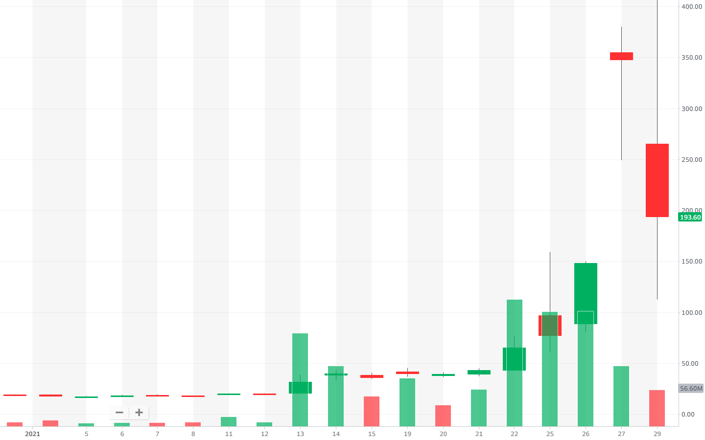

게임스탑(Gamestop)은 텍사스에서 시작해 미국 전역으로 확장한 비디오 게임 전문 소매점 체인이다.
원래 게임스탑은 2020년 11월부터 새로운 인물들과 신형 콘솔을 내놓으면서 호재가 많았지만 다른 오프라인 게임회사 보다는 전망이 좋지 않았다. 이로 인해 해지펀드인 멜빈캐피털이 5천만주를 공매도 하기 이르렀
but그러나 이 소식이 미국에 퍼지자 예전에 이 게임을 즐기던 사람들이 힘을 합쳐 공매도를 막기로 하였고 reddit에 wallstreetbets에도 퍼져나가면서 사람들이 주식을 사들이기 시작했고 일론 머스크 등등 세계 유명한 인물들도 공매도 반란에 동참했다.
1월27일 100달러에서 게임스탑의 주가는 무려 347.51달러까지 상승, 하루 전보다 134.84% 급등했다. 심지어 한국 시간으로 1월 28일 오후 7시, 주가는 무려 500달러까지 치솟았다가 400달러 초반으로 내려왔다. 열흘간 상승률은 1643.91%이다. 한국시간 1월 28일 오후 9시 30분 기준 490달러대를 기록할 만큼 엄청나게 뛰어올랐다.